Work
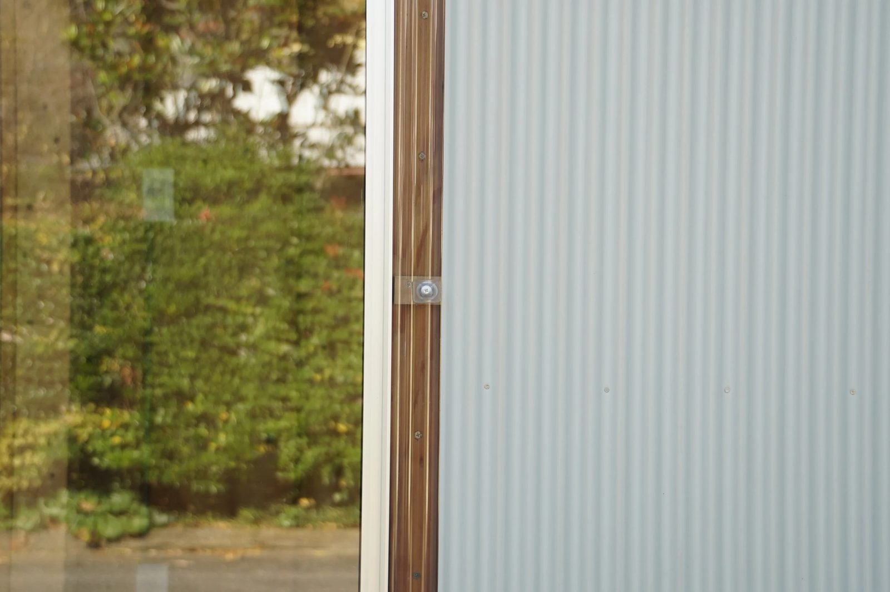
住宅New Case Study House 住宅北鎌倉の増築
住宅北鎌倉の増築 店舗クッポグラフィー 高輪ゲートウェイスタジオ
店舗クッポグラフィー 高輪ゲートウェイスタジオ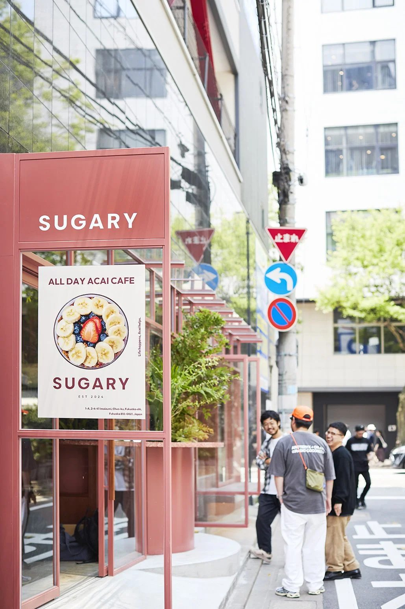
店舗Sugary 今泉 店舗bistro endroll
店舗bistro endroll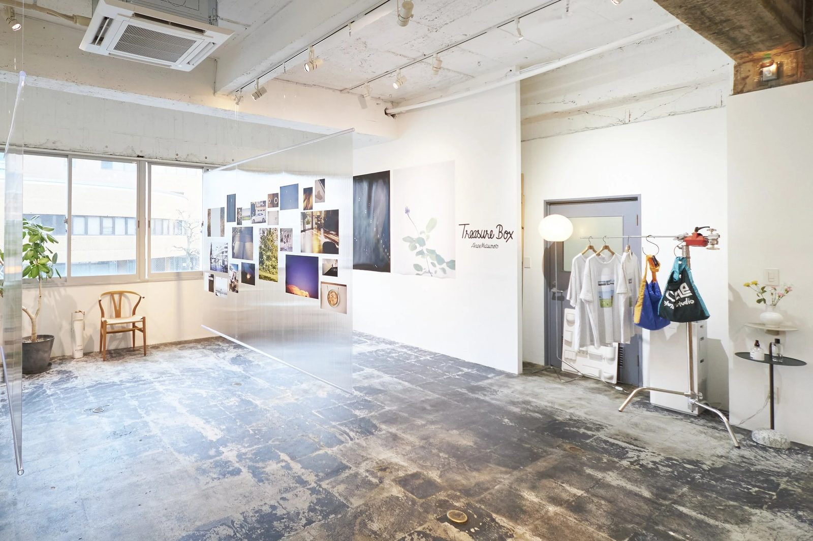
店舗circle photo studio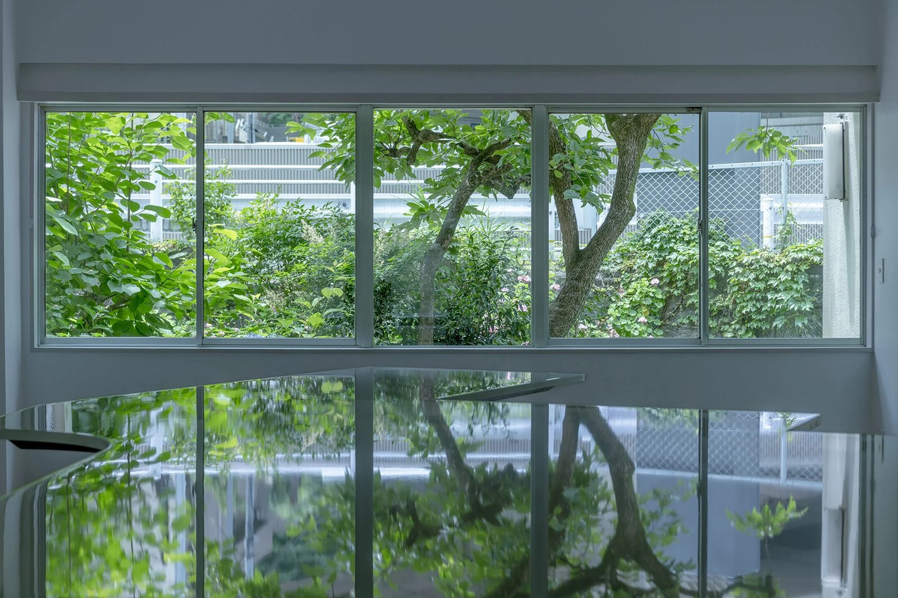
オフィスTable Room 住宅生前からある都市に住む
住宅生前からある都市に住む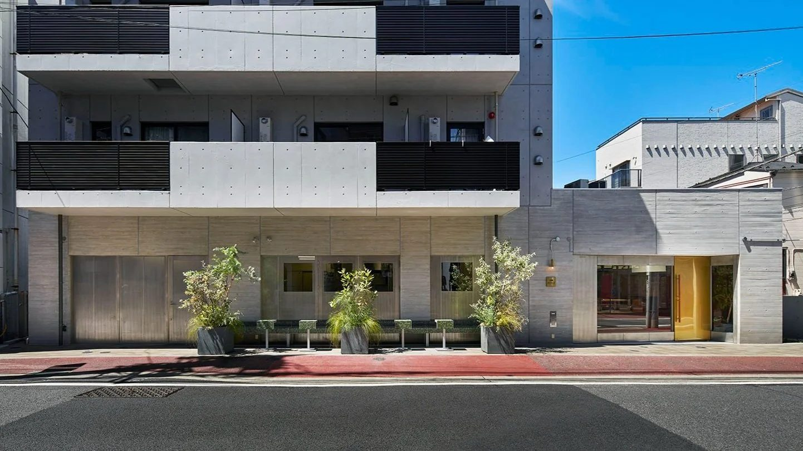
店舗Patisserie Minimal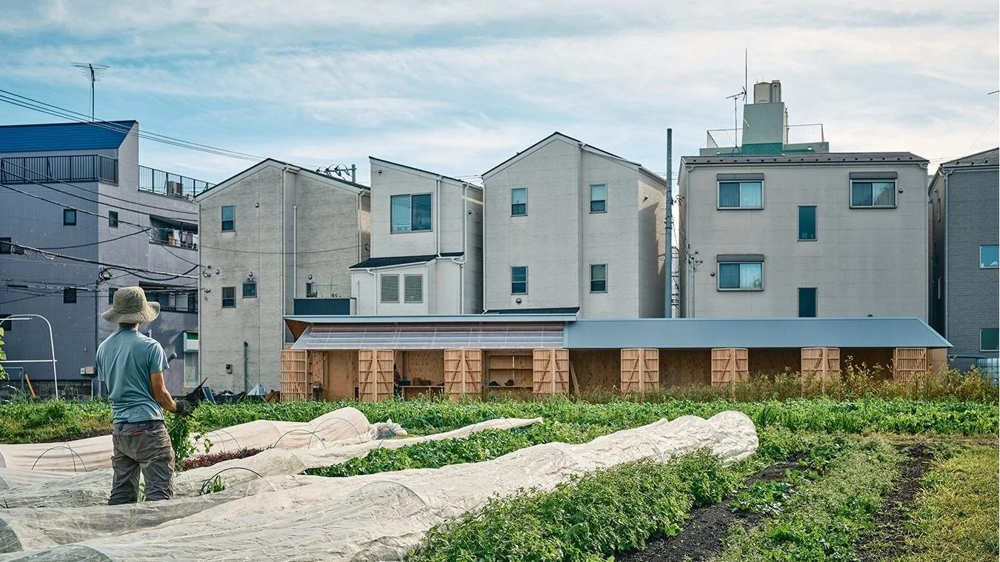
ランドスケープ・小屋畑のBackyard ランドスケープ・小屋NKHC Landscape Design 2022~
ランドスケープ・小屋NKHC Landscape Design 2022~ 住宅世田谷 谷の家
住宅世田谷 谷の家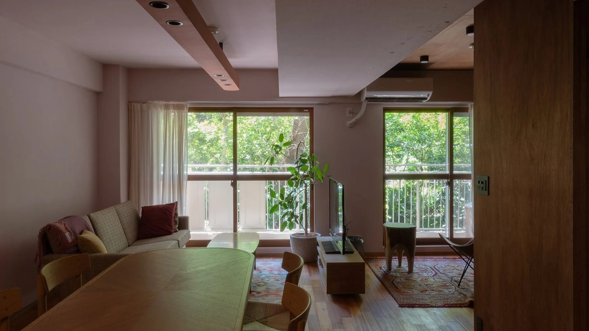
住宅緑のためのリノベーション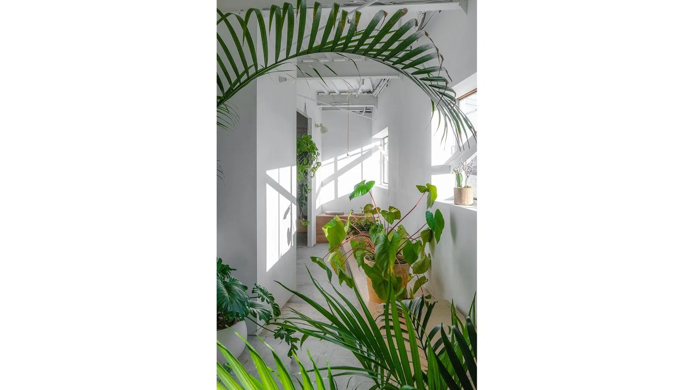
オフィス駒沢のオフィス 店舗クッポグラフィー 沖縄スタジオ
店舗クッポグラフィー 沖縄スタジオ 店舗LUZeSOMBRA HQ
店舗LUZeSOMBRA HQ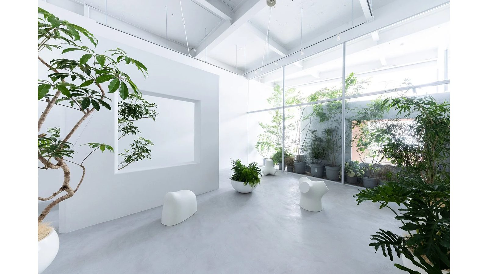
店舗クッポグラフィー 駒沢公園スタジオ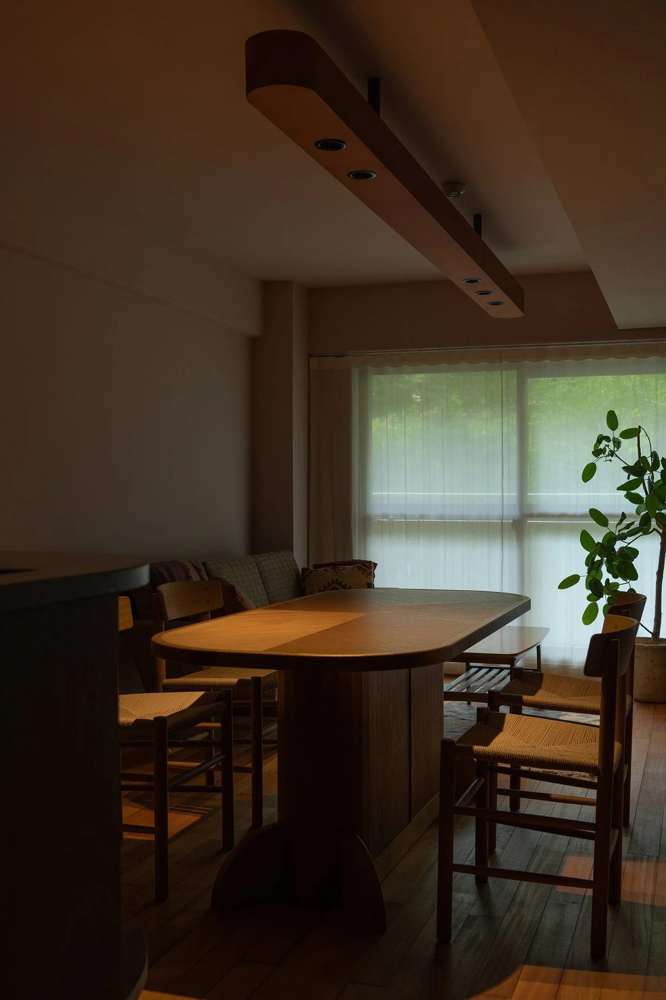
家具Rounded Dining Table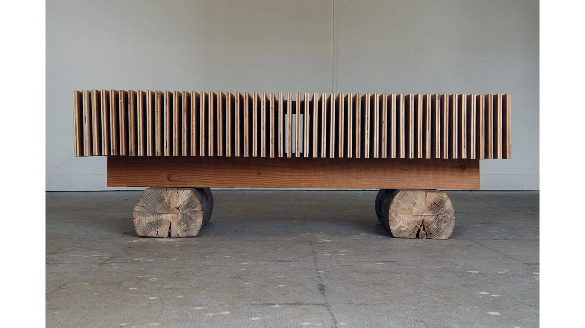
家具108